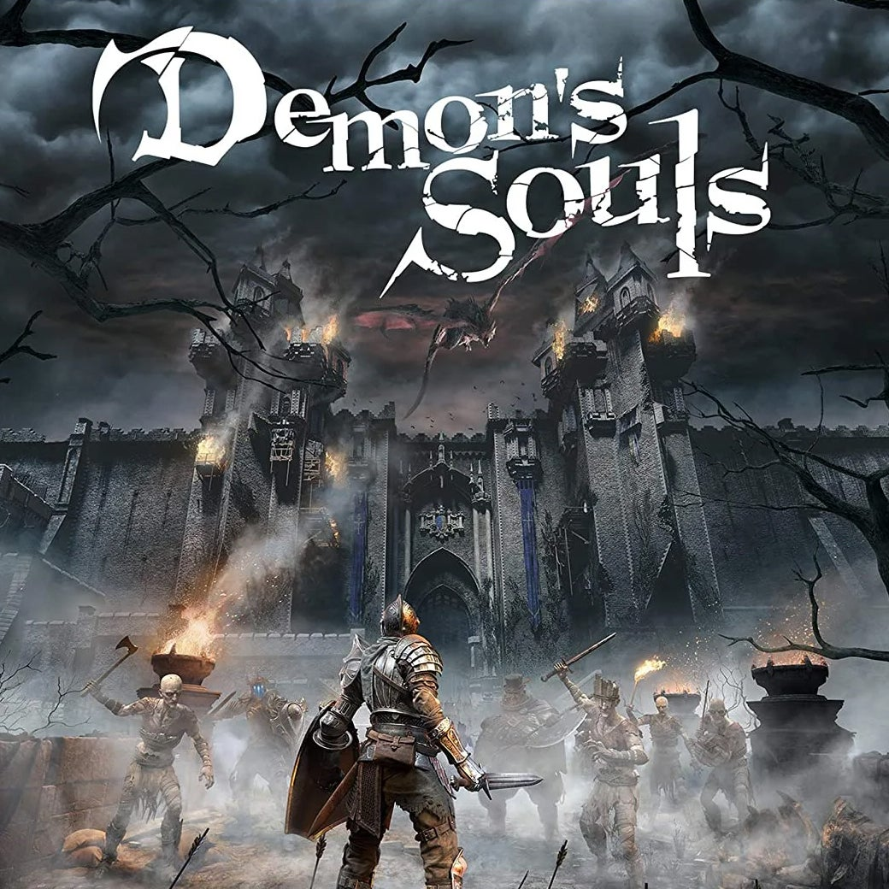
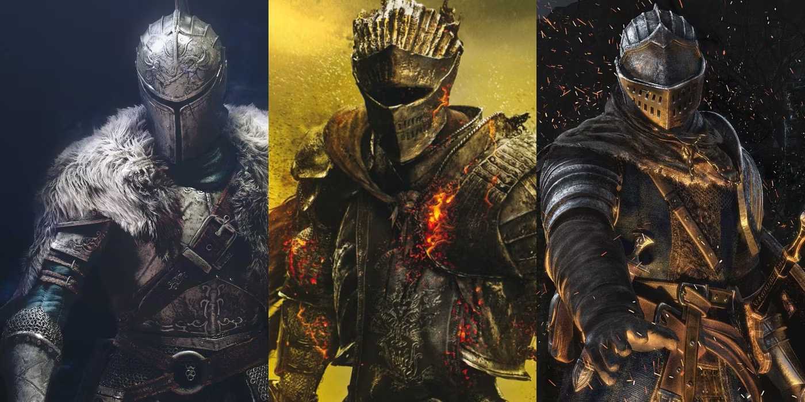
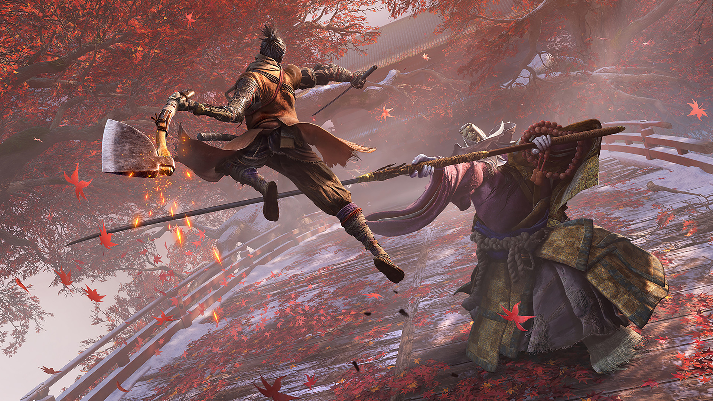
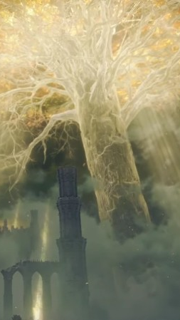

Games
Fromsoftware games collectively are often referred to as the "Soulsbornekiro" series, which includes Demon's Souls, Dark Souls 1, 2, and 3, Bloodborne, Sekiro and Elden Ring. These games feature intricate level design, punishing difficulty, and deep lore that is revealed through environmental storytelling and item descriptions. They are also known for their unique multiplayer system that allows players to interact with each other in various ways, such as leaving messages for other players or invading their worlds to engage in PvP combat.
King's field
King's Field is a series of action role-playing games developed by FromSoftware that began in 1994 on the PlayStation console. The game series takes place in a medieval fantasy world, and the player controls a knight who must explore dark, foreboding environments filled with monsters and traps. The game's combat is slow and methodical, and the player must manage their stamina and positioning carefully to succeed. The game's progression system also emphasizes exploration, as the player must find new weapons and items to progress through the game's levels. King's Field is considered the precursor to the "Soulsborne" series of games, as it shares many of the same gameplay mechanics and themes.

Demon's Soul
A 2009 action role-playing game that started the "Soulsborne" series. It takes place in the kingdom of Boletaria, which is overrun by demons. The player takes on the role of a hero who must defeat the demons and save the land. It is known for its challenging gameplay, atmospheric world, and unique multiplayer system.

Dark Souls series
Dark Souls is a series of action role-playing video games developed by FromSoftware. The first game, simply titled Dark Souls, was released in 2011 for PlayStation 3, Xbox 360, and Microsoft Windows. It was followed by Dark Souls II in 2014 and Dark Souls III in 2016, both of which were released for PlayStation 4, Xbox One, and Windows.
The games are known for their high level of difficulty, complex gameplay mechanics, and dark and mysterious atmosphere. The difficulty of the games has become legendary, with many players citing them as some of the most challenging video games ever made. The games require a combination of skill, strategy, and patience to succeed.
The series takes place in a dark and grim fantasy world filled with dangerous creatures, ancient ruins, and treacherous landscapes. The world is full of hidden secrets, lore, and history, which players can discover by exploring and interacting with various characters and objects.
Players take on the role of a protagonist, who must navigate through the world and defeat powerful bosses in order to progress. Combat in the games requires careful timing, strategic positioning, and a deep understanding of each enemy's strengths and weaknesses. Players must also manage their character's equipment, inventory, and stats in order to optimize their performance in battle.
One of the defining features of the series is the interconnected world design, which allows players to explore different areas in a non-linear fashion. This means that players can often take multiple paths through the game, and can backtrack to previous areas to discover new secrets or defeat optional bosses.
The games also feature a unique online multiplayer system, which allows players to interact with each other in various ways. Players can leave messages for other players to read, which can contain helpful hints or humorous comments. They can also summon other players to help them in battle, or invade other players' worlds to engage in PvP combat.
Overall, the Dark Souls series is known for its challenging gameplay, immersive atmosphere, and intricate lore. The games require a significant investment of time and effort to master, but those who persevere are rewarded with a deeply satisfying experience.

Bloodborne
Bloodborne is an action role-playing game developed by FromSoftware and published by Sony Computer Entertainment. It was released in March 2015 exclusively for the PlayStation 4. The game is set in the fictional city of Yharnam, a gothic, Victorian-era inspired setting plagued by a mysterious blood-borne illness. Players take on the role of a hunter, who ventures into the city to uncover its dark secrets and rid it of the beasts and other creatures that lurk in the shadows.
Sure, I can provide you with a detailed description of Bloodborne and its DLC.
Bloodborne is an action role-playing game developed by FromSoftware and published by Sony Computer Entertainment. It was released in March 2015 exclusively for the PlayStation 4. The game is set in the fictional city of Yharnam, a gothic, Victorian-era inspired setting plagued by a mysterious blood-borne illness. Players take on the role of a hunter, who ventures into the city to uncover its dark secrets and rid it of the beasts and other creatures that lurk in the shadows.
The gameplay in Bloodborne is similar to other games developed by FromSoftware, such as Dark Souls and Sekiro: Shadows Die Twice. Players navigate through various interconnected areas, battling enemies and bosses, while also uncovering hidden secrets and unlocking new abilities and items. The combat system is fast-paced and requires quick reflexes and strategic thinking to overcome the various challenges the game presents.
The game's DLC, The Old Hunters, was released in November 2015. It adds new areas, weapons, enemies, and bosses to the game, as well as expands on the lore of the game's world. The DLC takes place in the past, in a time when the hunters of Yharnam were still alive and hunting the beasts. Players explore the nightmare realm of the Hunter's Nightmare, a realm created by the blood-drunk hunters who have been consumed by their thirst for blood.
The DLC introduces several new weapons and items, as well as three new areas to explore: the Hunter's Nightmare, the Research Hall, and the Fishing Hamlet. The bosses in the DLC are some of the toughest in the game, including Ludwig the Accursed, Lady Maria of the Astral Clocktower, and Orphan of Kos.
Overall, Bloodborne and its DLC offer a thrilling and challenging gaming experience for fans of action role-playing games. The game's dark, gothic atmosphere, and intricate lore make it a standout title in the genre.
Sekiro: Shadow Die Twice
Sekiro: Shadows Die Twice is an action-adventure game developed by FromSoftware and released in March 2019 for PlayStation 4, Xbox One, and Microsoft Windows. The game takes place in a fictionalized version of Japan in the late 16th century, during the Sengoku period, where players take on the role of a shinobi named Wolf. Wolf is tasked with rescuing his lord, the Divine Heir, from the Ashina clan, who seek to use the young lord's blood for their own purposes.

Sekiro is a departure from FromSoftware's previous games, such as the Dark Souls series and Bloodborne, as it features a more focused and streamlined gameplay experience. The game emphasizes stealth and precision combat, with players using Wolf's various abilities, such as grappling, deflecting, and jumping, to navigate the world and defeat enemies. The game also features a unique resurrection system, where players have the ability to come back to life after being defeated in combat. This system adds an extra layer of strategy to the game, as players must decide when and where to use their resurrection, as well as how to approach each encounter.
Elden Ring

Elden Ring is an action role-playing game developed by FromSoftware and published by Bandai Namco Entertainment. It was released on January 21, 2023, and quickly became one of the most popular games of the year. The game takes place in a vast and beautifully rendered open world, filled with treacherous landscapes, mythical creatures, and powerful enemies.
In Elden Ring, players take on the role of a Tarnished, a being cursed to roam the world as an outcast. They must explore the world and discover the secrets of the Elden Ring, a mystical artifact that holds immense power. Along the way, players will encounter a variety of NPCs, each with their own story and motivations, and engage in intense battles with fearsome enemies.
One of the game's defining features is its unique gameplay mechanics, which blend traditional action RPG combat with new elements like mounted combat and magical abilities. Players can also customize their characters with a wide range of weapons, armor, and spells, allowing for a truly personalized experience. With its stunning visuals, immersive gameplay, and captivating story, Elden Ring is a must-play for any fan of action RPGs.